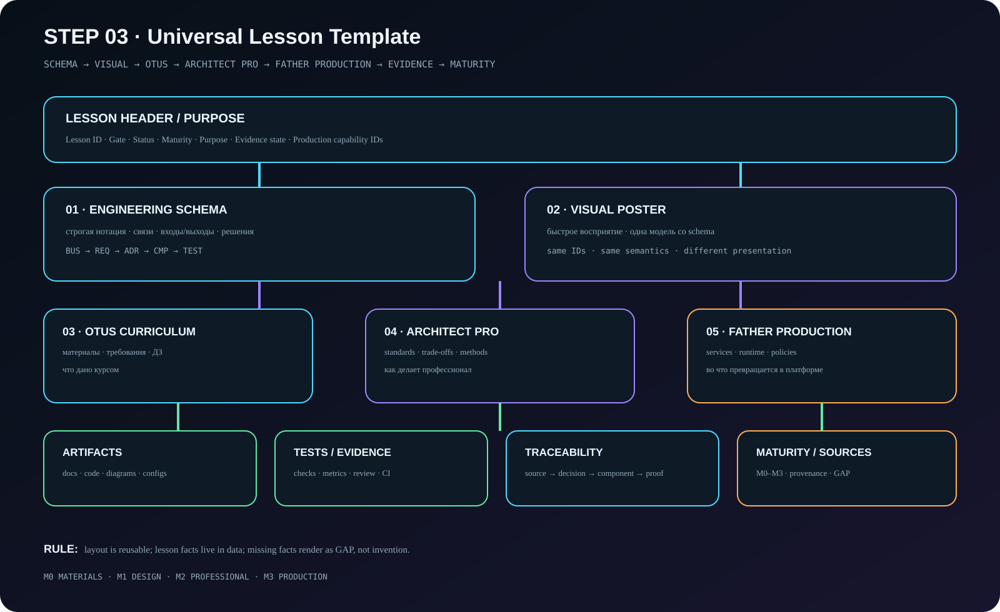

HTML/CSS/JS reusable shell. Не содержит фактов конкретного урока.
STEP 03 · Reusable UI Contract
Один каркас для 31 архитектурного урока
Layout больше не зависит от содержания урока. Факты живут в manifests; отсутствующие данные отображаются как GAP.
Visual
Universal Lesson Anatomy

Contract
Три независимых слоя
id, title, gate, status, maturity, capability IDs.
schema, poster, methods, artifacts, evidence, GAP, sources.